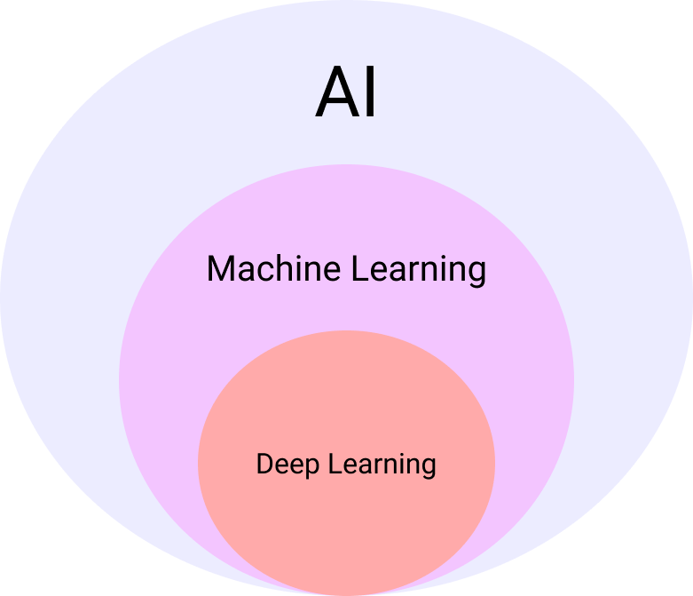

Clasification is used when predicting a label(or a discrete class label) output, when regression is used to predict quantity(continuous quantit) of the output. For example, when I want to predict quantity of icecream sold for each degrees of temperature, it is a regression. When I want to predict the type of ball that has 75cm of circumference, brown in color, and has 620g of weight, it is a classification.

Artificial Intelligence covers all the range human's coginition, ability to learn, and perceptions taught to computer. Machine Learning is a way to teach machine with the past data. ML uses ANN(Artificial Neural Network) to get output. ML is used to process structureed datas like db. Deep Learning is a subcategory of Machine Learning, and it uses multiple layers to get the output. DL is used to process semi-strucutred data such as images, videos, voice or texts.

Learn to make a good sequence of Learning. It uses Markov Decision Process to make a new decision. RL is used to solve a multi-level problem using trial and error.
Decision making process that involves 4 variables.
S: Set of State, characterizes the configuration of the environment
A_s: set of actions available from state s
P(s, s'): is the probabilty that action a in state s at time t will lead to state s' at time t + 1
R_s is the immediate reward that is rewarded right after transition of a state from s to s'.
Supervised Learning is a type of Machine Learning where the algorithm is trained on a labeled dataset, which means the dataset contains both input features and thecorrect output labels. The algorithm learns the relationship between the input features and the output labels, and can then make predictions on new, unseen data. Classification is an example of supervised learning. Unsupervised Learning, on the other hand, deals with datasets that do not have output labels. The algorithm learns the underlying structure or patterns in the data by itself. Common tasks in unsupervised learning include clustering (grouping similar data points together) and dimensionality reduction (simplifying the dataset while preserving its main characteristics). Clustering is an example of unsupervised learning
Overfitting occurs when a model learns the training data too well, including the noise and irrelevant details. As a result, it performs poorly on new, unseen data. On the other hand, underfitting happens when a model is too simple and fails to capture the underlying patterns in the training data, leading to poor performance on both the training and test datasets. The goal in machine learning is to find a balance between overfitting and underfitting by building a model that generalizes well to new data.
CNNs are a type of deep learning architecture specifically designed for processing grid-like data, such as images. They consist of several layers, including convolutional layers, pooling layers, and fully connected layers. Convolutional layers apply filters to the input data to detect specific features, like edges or textures. Pooling layers reduce the spatial dimensions of the data, making the model more computationally efficient. Fully connected layers connect every neuron in one layer to every neuron in the next layer, allowing the model to make predictions based on the learned features.
RNNs are a type of neural network architecture designed for processing sequences of data, such as time series or natural language. RNNs have a unique structure that allows them to maintain a hidden state, which can capture information from previous time steps. This enables RNNs to learn patterns and dependencies in sequences of data, making them suitable for tasks like language translation, speech recognition, and time series prediction.